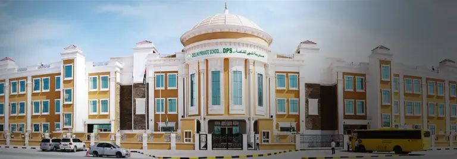

Delhi Private School, AjmanTeam Aqua Savers · Annual Day project
Theme: solving a water issue in the UAE
Leak Guard
A small alarm that spots a water leak at the very first puddle, so it gets fixed before water is wasted for days.
- Notices
- 1.5mm
- of water on the floor is enough to set it off.
- Warns with
- LCDscreen
- that flashes LEAK ALERT while the floor is wet.
- Made from
- 12parts
- mostly cardboard, a food tray and an Arduino.
- Runs on
- 5V USB
- from a laptop or a phone power bank.
Why it matters
Every drop counts in the UAE
The UAE is one of the driest places on Earth, yet each of us uses a lot of water every day. Water that leaks away has to be replaced, and making new drinking water here is hard work.
- Rain each year
- ≈ 100mm
- falls in a typical year, about a tenth of the world average.
- Water from the sea
- 42per cent
- of the UAE's water is seawater with the salt taken out, which uses a lot of energy.
- Daily use
- ≈ 500litres
- used by each person every day, far above the world average.
- One dripping tap
- 11,000litres
- wasted in a year by just one tap dripping once a second.
Leaks hide under sinks, behind washing machines and around rooftop tanks and water heaters. By the time someone spots a stain or a high bill, the water is gone. Leak Guard watches the floor for you and raises the alarm at the very first puddle.
Sources: The National, 2026 (rainfall) · The National, 2022 (desalination, daily use) · US EPA WaterSense (dripping tap)
How it works
From first drip to alarm
We built it from cardboard, a food container and an Arduino, a tiny computer you can program. Here is what happens when water starts to leak.
- 1
A leak starts
In our model, water poured into a pipe drips out of the end, just like a leaking pipe at home.
- 2
A puddle forms
A shallow food tray stands in for the floor and catches the drips.
- 3
The sensor gets wet
A water sensor hangs just above the floor. Its copper strips touch even a very thin puddle.
- 4
The Arduino checks
This tiny computer reads the sensor again and again. Dry, it reads about 12. Wet, about 420.
- 5
The alarm goes off
The screen flashes LEAK ALERT. Once the floor is dry it shows Dry and counts how many leaks it has caught.
Try it in 3D
Look inside our model
Turn the model around, tap a part to find out what it does, or switch to X-ray to see the electronics hidden inside the box. Set the floor to Dry and watch the little screen change.
Pick a part in the list or in the model to see what it does.
Drag to turn the model · right-drag to move it · Ctrl or ⌘ + scroll, or pinch, to zoom
Swipe sideways to turn the model · pinch, or tap − +, to zoom · tap a part to find it
What's inside
Where it helps
Where Leak Guard could help
Anywhere water can leak without anyone seeing it.
Under the kitchen sink
Loose pipe joints often drip for weeks behind closed cupboard doors.
Beside the washing machine
A split hose can flood the floor while nobody is home.
Rooftop tanks and heaters
Overflowing tanks and leaking heaters are out of sight on the roof.
Below the AC unit
A blocked drain line can drip onto walls and ceilings.
Our ideas for version 2
- A buzzerso you can hear the alarm from another room.
- A phone alertusing a Wi-Fi board, so you know even when you are out.
- An automatic valvethat shuts off the water the moment a leak is found.
Our team
Team Aqua Savers
We are students of Delhi Private School, Ajman. This year's Annual Day asked us to solve a water issue in the UAE. We chose leaks because they waste water quietly, and a simple, low-cost alarm can catch them early.
Thank you for visiting our project!
For builders
Build your own
Want to make one at home or in class? Here are the full drawing, the wiring and step-by-step instructions.
Show the build guideHide the build guide
Drawing WLD-001 · Sheet 1 of 1
General arrangement drawing
Third-angle projection: the top view sits above the front view, and the right view sits to its right. Dimensions in centimetres, not to scale. Dashed lines are parts hidden inside the control box.
Swipe a view sideways to see all of it.
Notes
- All dimensions in centimetres. Drawing not to scale (NTS).
- Electronics (items 3–6) sit 13 cm or more above the base. Only the copper strips of item 9 may touch water.
- Sensor tip sits about 1.5 mm above the tray floor, strips facing down.
- Dashed lines are hidden parts inside the control box.
- Wiring: sensor + → D7, − → GND, S → A0. LCD on D2–D6, D11, D12.
- Wrap cardboard near water (items 1, 10) in clear tape. 5 V USB power only.
Hover or tap a view to read coordinates in cm
Pins D2–D7 · D11 · D12 · A0
Wiring
Three jumpers run from the sensor up to the Arduino. The LCD plugs into the breadboard and connects to seven digital pins.
Swipe the board sideways to see every pin.
- LCD 16×2
- Sensor +
- Sensor −
- Sensor S
| From | Arduino pin | Jumper |
|---|---|---|
| Sensor + | D7 | Red |
| Sensor − | GND | Black |
| Sensor S | A0 | Yellow |
| LCD 16×2 | D2–D6, D11, D12 | Through the breadboard |
| USB cable | USB port | 5 V from a laptop or power bank |
Why is + on D7?Powering the sensor from a digital pin lets the sketch switch it on only while it takes a reading. Less time with current in wet copper means the strips corrode more slowly.
8 steps
Build it
Cardboard, a food container and a handful of parts. Every measurement matches the drawing.
- 01
Base and back wall
Cut two 40 × 30 cm boards from corrugated cardboard. Glue one upright along the back edge of the other.
Items 1, 2
- 02
Control box
Make an 18 × 9 × 12 cm box. Cut a 7 × 2.5 cm window in the front, 4.5 cm in from the left and 6 cm above the box floor, and a USB hole in the right side. Fix it to the wall with its floor 13 cm above the base.
Item 3
- 03
Electronics
Lay the Arduino on the box floor with its USB port facing the side hole. Stand the breadboard upright behind the window and plug in the LCD so the screen lines up with it.
Items 4, 5, 6
- 04
Leak pipe
Use rolled card, a straw or a PVC tube about 1.6 cm across. Run it 16.6 cm out from the wall at 23.8 cm high, 6.4 cm in from the left, then turn it down to finish 16.4 cm above the base.
Item 7
- 05
Tray
Set the 18 × 13 × 3.2 cm tray on the base under the pipe outlet, 3 cm in from the left edge and 4 cm back from the front edge.
Item 8
- 06
Sensor
Glue a 2.6 × 2.2 × 5.4 cm cardboard block into the tray and wrap it in tape. Fix the sensor to it strips-down, with the tip about 1.5 mm above the tray floor.
Items 9, 10
- 07
Wiring
Chain male–female jumpers, about 40 cm in all, from the sensor up into the box: + to D7, − to GND, S to A0. Connect the LCD to D2–D6, D11 and D12.
Item 11
- 08
Power and test
Plug the USB cable into a laptop or power bank. Pour a little water down the pipe and watch the screen switch from Dry to LEAK ALERT.
Item 12